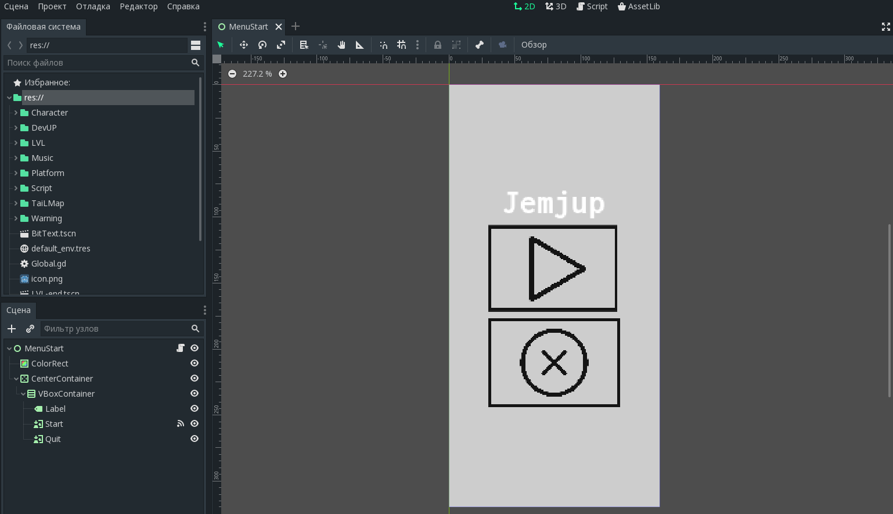
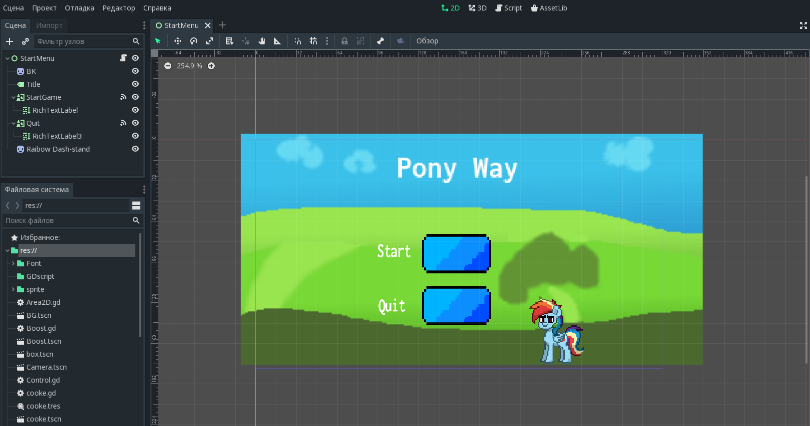

Моя профессия заключается в создании видео игр. Создание разных и не повторимых историй, которые бы понравились людям. Мне нравится творить, по этому я выбрал эту профессию. GameDev не исключение разным трудностям, даже иной переполнена ими. Создание игр связанна так или иначе с кодом. Почти что каждый программсит говорит что невозможно написать правильный код с первого раза. Но я готов к этому!
Моё имя и фамилия Иванов Николай. Живу рядом с Москвой. Почти каждый день я стараюсь узнать что-то новое чтобы добться своей цели. Я учу языки программирования, движки и так же учусь рисовать. Везде пытаюсь приуспеть, но в основном я пытаюсь рисовать. Уже были некоторые нароботки игр. Сейчас вы их видите рядом.
Создавая Doomer я очевидно вдохновлялся самим Doom. Это 2D игра с пиксельной графикой(Как и последующие) c видом от третьего лица, в этой игре нужно было проходить уровни и конечно убивать демонов.
Эту игру я хотел сделать для мобильной платформе, суть ещё проще - нажимай чтобы допрыгать до своей цели.
PonyWay был моим почти что самым первым проектом с которым я входил в GameDev. Это 2D платформер Приоритетом геймплея было то что игрок летал за персонажа на высокиъ скоростях и так всё быстрее и быстрее!
На этом мой сайт-визитка заканчивается если я вас заинтересовал то вы можете связаться со мной по следующим ссылкам